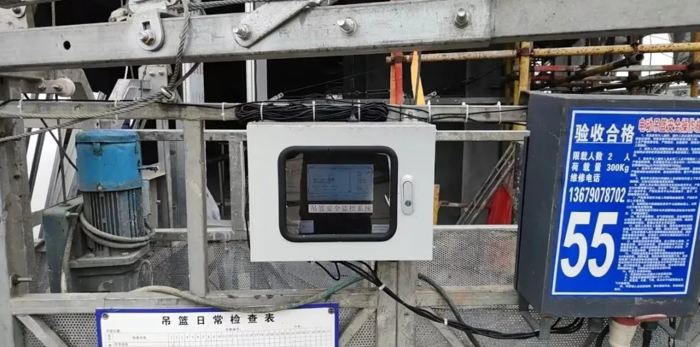

电动吊篮运行监测
运行监测需要保留告警前后的仪表数据，为班组核对制动与传感器状态提供记录。
- 个人职责
- 参与设备侧运行数据采集的对接。
- 项目内容
- 运行数据采集、告警与安全联锁配合

项目整体架构图
运行数据监测
仪表与工业 I/O采集双路载重、倾角、风速和升降方向
仪表读数与状态
ROS2 只读采集网关获取仪表数据和设备状态
采样记录与事件
工控机事件记录按设备与班次归档曲线、告警与制动反馈
本地安全联锁
限位开关和仪表触点提供限位及超限状态
限位、超限信号
独立安全继电器在设备侧执行联锁
联锁动作
告警与制动本地实现告警和制动联动
ROS2 节点通信关系图
本图表示方案中的采集与记录职责。本地联锁在设备侧独立运行。
监测事件归档
只读采集网关采集仪表读数及制动反馈
载重、倾角与联锁状态
事件与曲线记录模块按设备、班次和事件整理运行时序
事件编号与时序数据
班报模块关联维护条目和曲线，提示需要复查的事件
软件模块设计
- 仪表接入与采集
- 仪表侧完成去皮和标定，网关读取两个称重通道和运行状态。
- 本地联锁
- 限位开关、仪表超限触点和独立安全继电器实现告警与制动联动。
- 运行时序归档
- 记录告警前后载重、倾角及继电器反馈，以便按事件复盘。
- 班报与维护条目关联
- 汇总告警持续时间、重复告警和制动情况，关联对应设备手册和维护记录。
硬件通信接口设计
| 设备或端点 | 通信接口 | 信号或数据 |
|---|---|---|
| 称重仪表与网关 | 只读 Modbus RTU | 双路载重及仪表状态 |
| 现场传感器与工控机 | 工业 I/O | 倾角、风速、升降方向 |
| 限位开关、仪表触点与安全继电器 | 本地硬件联锁 | 限位和超限触点信号 |
| 制动继电器反馈 | 设备状态输入 | 继电器状态用于事件记录与回看 |
关键功能与技术说明
- 联锁和采集职责
- 在设备侧完成限位、超限告警和制动联动。上位机以只读方式采集仪表数据，同步记录联锁触发前后的设备状态。
- 以可追溯记录生成班报
- 先由运行记录计算告警次数与持续时间，再按设备版本关联手册。班报保留事件编号、曲线和相关条目供班组核对。